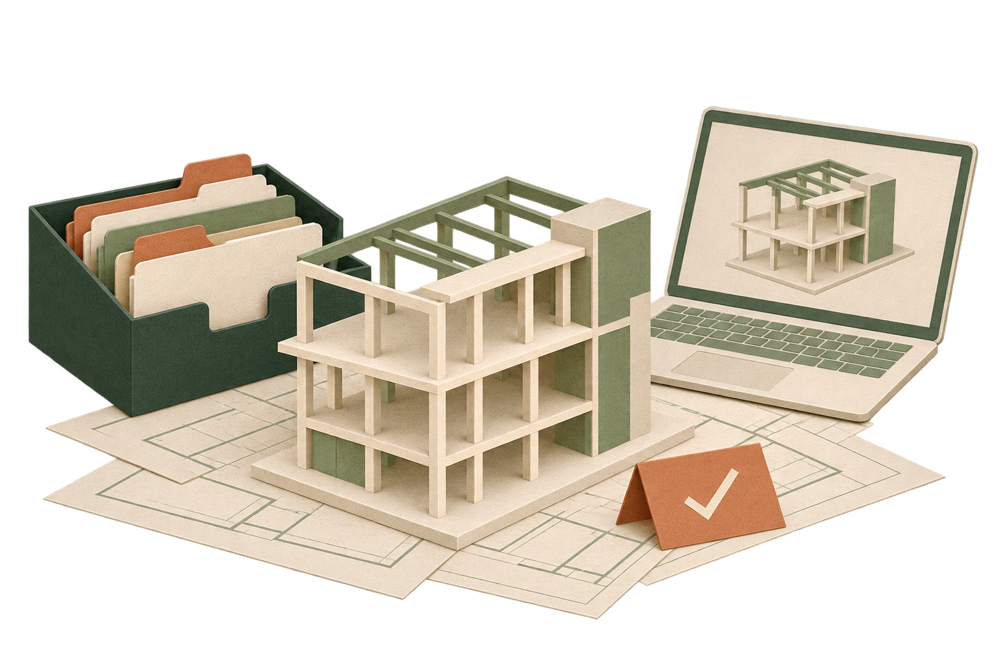

Share project data across teams and tools.
Keep project records in a system your organization controls. Share an exact version with another team or open it in an app you choose.
Subsoil is a working example of a common data environment (CDE) that uses the open OCI standard to exchange versions.
